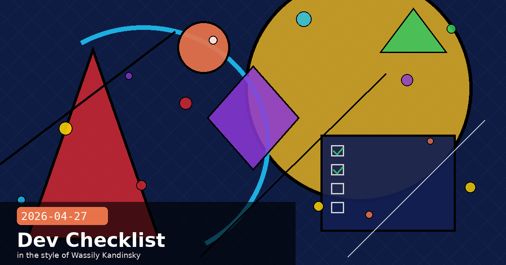

Rate Limits API, Opus 4.7 Migration Checklist & the April 30 Context Window Warning

💡 The Rate Limits API: Stop Hardcoding Limits in Your Gateways
Anthropic quietly shipped the Rate Limits API on April 24 — a new Admin API endpoint that gives organisation administrators programmatic, read-only access to every rate limit configured for their org and individual workspaces. If you maintain a Claude gateway, proxy, or internal cost-management tool that currently hardcodes RPM/TPM values, this is the endpoint you've been waiting for.
What it returns
A GET /v1/organizations/rate_limits call returns a list of rate limit groups. Each group represents a set of models (or a resource like Message Batches or the Files API) that share a single limit pool, along with the configured limits:
The workspace endpoint — /v1/organizations/workspaces/{workspace_id}/rate_limits — returns only override values, so a group absent from the response inherits the org-level limit. The org_limit field is included alongside each override value for quick comparison.
Three use cases to implement now
Gateway sync at startup — read limits once on boot and on a schedule so your proxy's throttle values never drift from Anthropic's actual configured limits.
Internal alerting — pair this with the Usage and Cost API to trigger a Slack alert when usage crosses, say, 80% of the configured RPM in the last minute.
Workspace audit — verify that your provisioning automation set workspace overrides correctly; diff the API response against your Terraform state.
Admin API key required
This endpoint requires a key starting with sk-ant-admin... — a separate credential from your standard sk-ant-api... keys. Only organisation members with the Admin role can provision these through Console → Settings → Admin Keys. The Rate Limits API is read-only; to change workspace limits you still use the Console UI.
Filter by resource type using the optional group_type query parameter. Valid values: model_group, batch, token_count, files, skills, web_search. Look up any model string — dated IDs like claude-opus-4-7 or aliases — and it will appear in exactly one model_group entry.
💡 Opus 4.7 Migration Checklist: Three Breaking Changes That Will Silently Break Your App
Claude Opus 4.7 launched April 16 with a longer-than-usual list of breaking API changes. If you haven't migrated yet, you have until June 15 before Opus 4.6 (and Sonnet 4) retire. Here are the three changes most likely to surface as bugs rather than obvious errors — and what to do about each.
1. Sampling parameters removed — now a hard 400 error
Setting temperature, top_p, or top_k to any non-default value on Opus 4.7 returns a 400 invalid_request_error. The safest migration path is to remove these parameters entirely from all requests targeting Opus 4.7. If your codepath used temperature=0 hoping for determinism, note that it never actually guaranteed identical outputs — and determinism is better pursued via prompting with a fixed seed or explicit instructions to format output consistently.
# Before (Opus 4.6) — will 400 on Opus 4.7
response = client.messages.create(
model="claude-opus-4-7",
temperature=0.2,
max_tokens=4096,
messages=[...]
)
# After — omit sampling params entirely
response = client.messages.create(
model="claude-opus-4-7",
max_tokens=4096,
messages=[...]
)
2. Thinking content omitted by default — a silent behaviour change
In Opus 4.6, extended thinking blocks were included in the response stream by default. In Opus 4.7 they are omitted — no error is raised, but your product will show a long pause before output begins if you stream thinking to users and haven't opted in. To restore visible progress during thinking, set "display": "summarized":
Note that thinking: {"type": "enabled", "budget_tokens": N} now returns a 400 error. Adaptive thinking is the only supported mode on Opus 4.7.
3. New tokenizer — up to 35% more tokens per request
Opus 4.7 uses a new tokenizer that may use 1× to 1.35× as many tokens as Opus 4.6 on the same input. /v1/messages/count_tokens will return a different value for 4.7 than 4.6. Practical actions:
Raise max_tokens limits with headroom (especially compaction triggers and context window calculations).
Re-baseline any cost estimates — token efficiency varies by workload shape.
Use the effort parameter ("low"–"xhigh") to trade intelligence vs. token spend. Start with "high" for most tasks; use "xhigh" for demanding coding and agentic loops.
Timeline: June 15, 2026
Claude Sonnet 4 (claude-sonnet-4-20250514) and Claude Opus 4 (claude-opus-4-20250514) retire June 15. Claude Opus 4.6 is not explicitly deprecated yet, but Opus 4.7 is generally available at the same $5/$25 per MTok pricing. The recommendation is to migrate to Opus 4.7 for new work and Sonnet 4.6 as a drop-in for Sonnet 4 workloads.
Opus 4.7migrationbreaking changestemperatureadaptive thinkingtokenizereffort
💡 3 Days Left: The 1M Context Window Beta for Sonnet 4.5 and Sonnet 4 Retires April 30
Anthropic announced on March 30 that the 1M token context window beta — activated via the context-1m-2025-08-07 header on Claude Sonnet 4.5 and Claude Sonnet 4 — will be retired on April 30, 2026. That's three days from today. After April 30, requests that include that header on those models and exceed the standard 200k-token context window will return an error.
Who is affected
You are affected if your code passes "anthropic-beta": "context-1m-2025-08-07" in any request to claude-sonnet-4-5-20250929 or claude-sonnet-4-20250514 (or their aliases) with prompts longer than 200k tokens. Production pipelines that ingest large documents — legal review, codebase analysis, long-form research — are the most likely candidates.
Migration path
Migrate to Claude Sonnet 4.6 (claude-sonnet-4-6) or Claude Opus 4.6/4.7 — all of which support the full 1M token context window at standard pricing with no beta header required. The 1M window is now generally available on those models (since March 13). Steps:
Replace claude-sonnet-4-5 → claude-sonnet-4-6 or claude-opus-4-6 in your model string.
Remove the context-1m-2025-08-07 beta header — no header needed on 4.6+ models.
Re-run your token counting step if you are on Opus 4.7, as the new tokenizer changes token counts by up to 35%.
Update cost estimates: the 1M window on Sonnet 4.6 is billed at standard pricing with no long-context premium, unlike the beta.
Don't wait until April 30
Deprecations on Anthropic's API go live at exactly the announced time. If your application serves production traffic involving long contexts and you haven't tested the migration yet, make time today — not tomorrow. A broken API call in a long-running agent loop is harder to debug under pressure than a controlled swap done in advance.